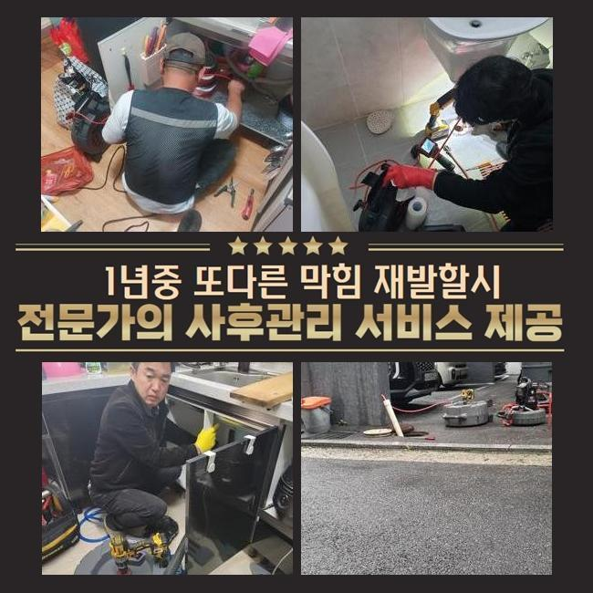
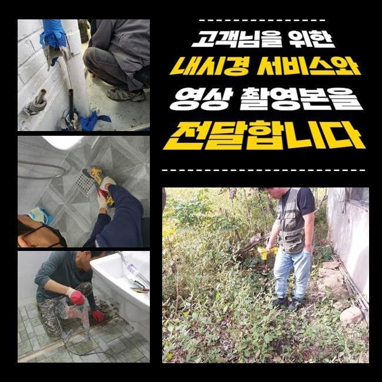
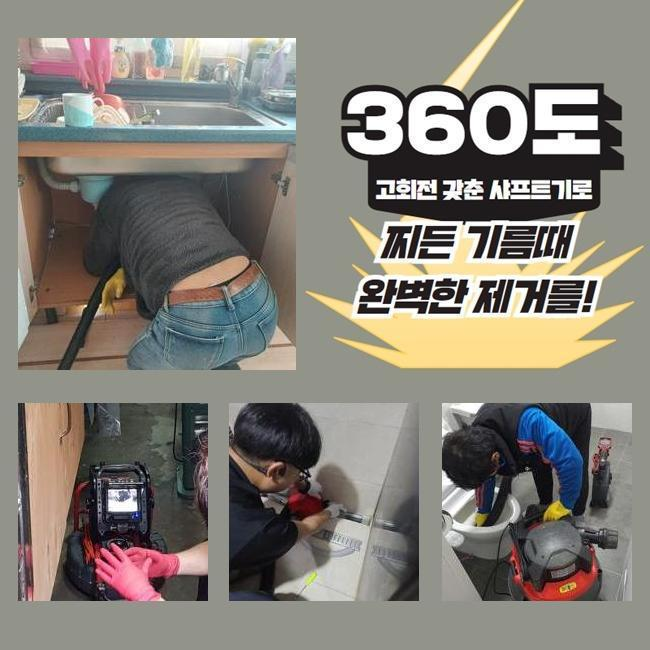
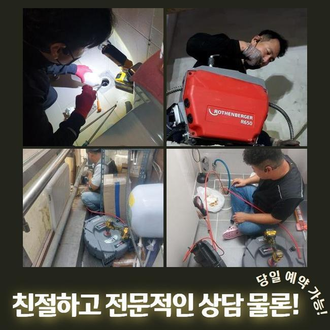
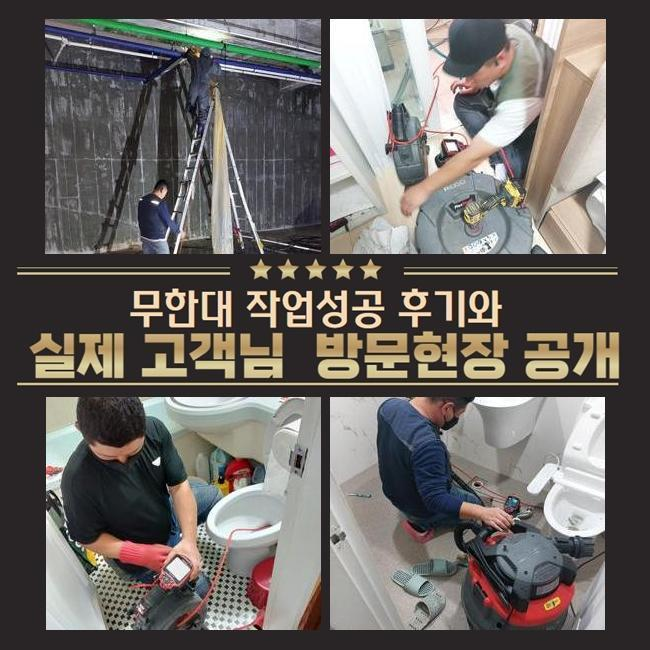
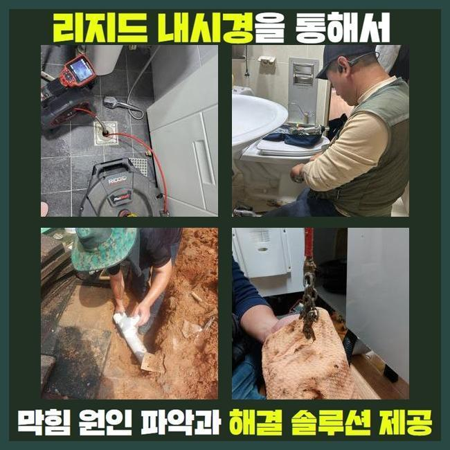
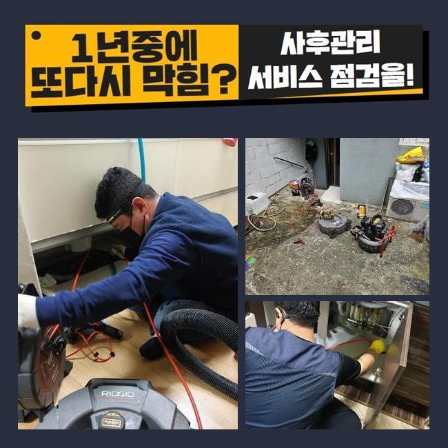

🏠 영도 하수도고압세척 오수관로 원룸변기막힘 하수관공사
용인 싱크대막힘 전문 시공 후기

📋 작업 개요
- 위치: 용인
- 서비스 유형: 싱크대막힘, 변기막힘, 하수구막힘, 배관막힘, 뚫는업체, 배관청소, 고압세척, 설비공사, 악취차단
- 작업 일시: 2024. 12. 31. 23:21
- 업체명: 하수구수사대 (010-5615-2118)
🔍 문제 상황
영도 하수도고압세척 오수관로 원룸변기막힘 하수관공사
저희팀은 배수관과 관계된 여러가지의 시공을 시행중에 있죠
관련된 인력과 장비를 갖추고 고객께서 처해있으신 고장에 즉시 대처해드리고 있죠
이번 글에서는 식당에서 발생한 물막힘 해소 공정을 안내드리겠습니다
전주에 의뢰하신 데는 음식점이 모여있는 건물이었는데요
한 음식점의 배수문이 막혀버리게 되었으며 그것에 더하여 공용화장실 통수마저 온전하게 안된다며 빠르게 방문해달라고 하셨어요
해당위치에서 일을 마친 근무자가 바로 이동하였으며 합당한 대책을 시행하기로 합니다
싱크대의 물막힘과 화장실공간의 고장이 일어난 위치는 닭백숙 식당이었는데요
주방공간에선 여러 음식재료를 처리하기에 관막힘이 자주 발생해요
이렇기에 식당을 운영하시는 분들께선 그것에 대처한 여러가지의 방책들을 행하고 있으시죠
수년간 주의를 기울여서 사용하였다 하더라도 느닷없이 큼지막한 음식물쓰레기가 들어가게 되면 체증이 일어나기 쉬우므로 관리하기 어려운 측면도 있습니다
금일 소개드릴 장소는 무슨 사유로 체증이 발발한 것인지 신밀하게 파악하도록 합니다
일단 주방설비부터 파악하기로 합니다
음식점의 배관은 일반가정의 배수형태와는 다른 양상을 보이고 배수트렌치의 사이즈도 상당히 크죠

🔎 원인 분석
💡 전문가 진단: 정밀 진단 장비를 사용하여 슬러지의 고착 여부를 판명하고 타격/세척 작업을 실시했습니다.
그렇기 때문에 처치가능한 오폐수의 양또한 많아질 수밖에 없는데요
따라서 통상적인 주거장소의 유동성테스트를 기준점으로 정하고 수선여부를 결정해선 안되고 충분한 물을 투입해서 상태를 정밀하게 알아보는 것이 중요하죠
해당시공을 정확히 안하고 대충 넘어간다면 얼마가지 못하여서 막힘현상이 재발하기 쉽습니다
배수기능을 확인하였고 정상으로 물흐름이 안된다는걸 파악하게 되었죠
찬찬히 빠지기는 했으나 정상적으로 사용을 이어나가기엔 역부족이었답니다
다음으론 배관안으로 배관내시경을 투입시켜 명확히 문제를 조사해보기로 하였습니다
기름성분들과 석회물질들이 관로속에 들어찬 상태였죠
관로 안에 혼입되면 곤란해지는 물질들이 누증되어서 문제가 생긴거예요
이러한 것들과 관계된 관로에 투입돼면 문제가 될것들에 대하여 안내해 드릴게요
설명하는 것들을 숙지해주기실 바라며 일상생활에 적용해보시길 당부드려요
기름슬러지가 차가운물과 만나게되면 굳어지고 때문에 관로에 눌어붙을 가망이 커요
그렇기 때문에 반드시 휴지 등으로 제거하고 설거지하는 게 중요하답니다
부가적으로 기름분리수거 역시 능동적으로 쓰시는게 좋겠죠
요즘에 즐겨드시는 원두커피 잔재들도 하수관막힘을 야기할수 있죠
커피가루는 기름과 결합하는 특성이 있어 하수관 속에서 뒤얽힐수가 있죠

🔧 작업 과정
그러하기에 일반쓰레기로 분류하여 버리시는게 좋습니다
조리하다가 남긴 음식들을 주방배관에 흘려보내면 관로에 누적될 여지가 있어요
양념장과 같은것들은 알갱이가 미세하기에 트랩을 관통하여 하수관으로 들어갈수 있으므로 분리해서 폐기하시는게 좋답니다
메뉴를 조리하시다가 생성된 옥수수가루같은 것들도 개수대에 곧바로 폐기한다면 응축되어서 배관정체를 유발하기 쉽습니다
그렇기에 이러한 것들은 필수적으로 개별처리하여서 배수시설물을 청결하게 관리하는게 좋겠습니다
내시경설비로 심부까지 진단해보았는데 공용파이프에도 이상이 있을거라 예상되었으며 추가로 검사해보기로 했죠
일단 의뢰인분의 주방공간의 하수관 세척을 해야하겠죠
닭백숙요리 전문식당이라 여타 업장들과는 달리 기름성분이 다량으로 누증된 상태였고 그외의 노폐물들과 믹스되어서 혼잡한 상태였습니다
이상황이 오래 지속되며 관로와 일체화되어버린 국면이었어요
샤프트기기를 써서 본 지점의 초반 세정시공을 시행하기로 했습니다
노즐부위는 현장상황에 따라 교체하여 시공할때도 있는데 통상 쇠로 가공된 체인노커를 쓰곤하죠
케이블의 끝부분에 해당되는 체인노커가 체결되어 관로속에 집어넣고 작동시키면 고속으로 회전하면서 상존하는 하수관찌꺼기들을 파쇄시키는 공정을 이행하게 만들어주죠
통상적으로 해당 기계를 돌리면 어지간한 물질들을 떨어져나갑니다
그렇지만 앞서서 안내해 드린바대로 해당 현장은 메인관로가 이물이 전이되었다는걸 알아낸바가 있죠
그렇다면 개별배수관 처리만으로 본원적인 문제점이 해결될수가 없어요
뚫린걸로 오인될수 있으나 메인 관로가 막혔다면 몇주정도가 흐른다음에 또다시 관로가 막히게 된답니다
가지배관 세척공정을 끝낸후에 지하기계실에 위치해 있는 횡주관로를 진단해 주었답니다
배관내시경을 밀어넣었더니 두텁게 누증된 녹황색의 노폐물들이 굉장히 많이 깔려있었죠
수년간 누적된 결과물로 간주되었고 크기도 크다보니 더욱더 수량이 방대해진거죠
해당 위치를 고속물세척으로 해결하기로 하였으며 2시간30분간 청소를 실행했습니다
공동관까지 스케일링 수리를 하고나서 고객님의 삼계탕집으로 가서 배수관 통수시험과 화장실까지 검점을 실시했더니 정말 깔끔하게 뚫음이 이루어져서 시원하게 빠져나갔답니다
금번에 처리한 장소는 조리과정에서 나온 노폐물들과 석회물질들이 막힘을 일으켰던 이유였고 기계실의 공동관까지 차단된 상태였기때문에 무척이나 심각했었죠
해당 문제를 분쇄기기와 고압물세척으로 짜임새있게 처치하였으며 개운하게 개통된 정황을 마주할수 있었어요
시공을 끝내고 생활중에 발발가능한 막힘상황들과 알아두면 요긴한 파이프보존 대책들을 말씀드렸죠


✅ 작업 완료
그리고 전화로 한번더 물어보셨기에 세세하게 안내드렸답니다
세척을 대충대충 진행해버린다면 몇달뒤 배수관에 더욱더 큰 문제가 발생가능합니다
그러므로 정확한 시공방식을 접목시켜 해결해내려는 태도가 필요합니다
이에 따라 다양한 기기들을 종합하여 수리를 실행해야 한단걸 말씀드려요
식당에서 갑자기 관로막힘이 발발한다면 영업을 못하는 상황이 될수 있답니다
그렇기에 여러분들은 미세하게라도 이상이 목견되었다면 방관하지말고 배관전문업체에 문의하시길 당부드려요




⚠️ 주방 싱크대 배관 막힘 예방 수칙
- ✅ 기름기가 묻은 식기나 프라이팬은 설거지 전 키친타올로 반드시 기름때를 닦아내세요.
- ✅ 주기적으로 싱크대 개수대에 뜨거운 물을 가득 받아 한 번에 내려 배관 내부 기름을 씻어내세요.
- ✅ 배수구 거름망을 미세한 필터로 사용하시고 음식물 찌꺼기가 틈으로 새어 들지 않게 관리하세요.
- ✅ 베이킹소다와 식초를 뜨거운 물과 함께 일주일에 한 번씩 부어주면 배관 살균과 막힘 예방에 좋습니다.
💡 핵심 정리
- 확실한 장비 작업(내시경 점검 및 샤프트 스케일링)으로 원인을 뿌리 뽑습니다.
- 작업 후 1년 이내에 동일한 부위 재발 시 100% 무상 A/S 서비스를 보장합니다.
- 서울 · 경기 · 인천 전 지역에 24시간 언제든 긴급 출동할 수 있도록 항시 대기 중입니다.
❓ 자주 묻는 질문 (FAQ)
🚨 용인 싱크대막힘 문제로 고민이신가요?
정확한 원인 진단과 확실한 시공으로 재발 없는 해결을 약속드립니다.
24시간 긴급 출동 | 서울 · 경기 · 인천 전지역 | 1년 내 재발 시 무상 A/S